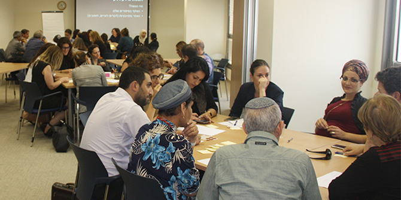

The Mandel Center for Leadership in the Negev held a study day for municipal welfare bureau directors and supervisors of welfare in Israel’s southern district on May 23 2017. The program was an outgrowth of the close professional relationship between the Center and the management of the Southern District of the Ministry of Social Affairs and Social Services, as well as welfare officials in local authorities.
The study day had two main goals: to deepen participants’ knowledge and understanding of leadership practices appropriate for use in changing environments, and to foster connections and collaborations between the faculty of the Mandel Center and leading figures in welfare in the Negev.
The event was attended by directors of municipal welfare divisions, supervisors of the Southern District of the Ministry of Social Affairs and Social Services, directors of the Southern District, and faculty members of the Mandel Center for Leadership in the Negev.
The study day began with a lecture by
Yorai Gabriel, an expert on thinking strategies for challenges that demand creative solutions, particularly problems that are difficult to define. The lecture emphasized the importance of maintaining an open approach that looks for knowledge that already exists in the field.

Next, the participants participated in workshops in a round table format. The workshops examined issues arising in the field, considered possible motivations for change, and developed and tested theories. Among the issues raised were the absorption of personnel in the periphery, dealing with computerization in offices with older employees who are not used to working in a computerized environment, coping with organizational changes in the ministry, and cooperation between directors of welfare offices in the region.
In the day’s third session, Dr. Stu Mirkin, deputy director of the Southern District, gave a lecture on biological processes in the brain during times of stress, and how to develop resilience.
In the concluding discussion at the end of the day, the participants reported a very high level of satisfaction with the event, and made suggestions for continued work in teams around issues of common interest.
The study day was organized by Yaffa Yisrael and Miriam Ben Atar from the Southern District supervisory team at the Ministry of Social Affairs and Social Services, and by Dr. Noa Milman and Dr. Smadar Ben-Asher, faculty members of the Mandel Center for Leadership in the Negev.
{kind=link}